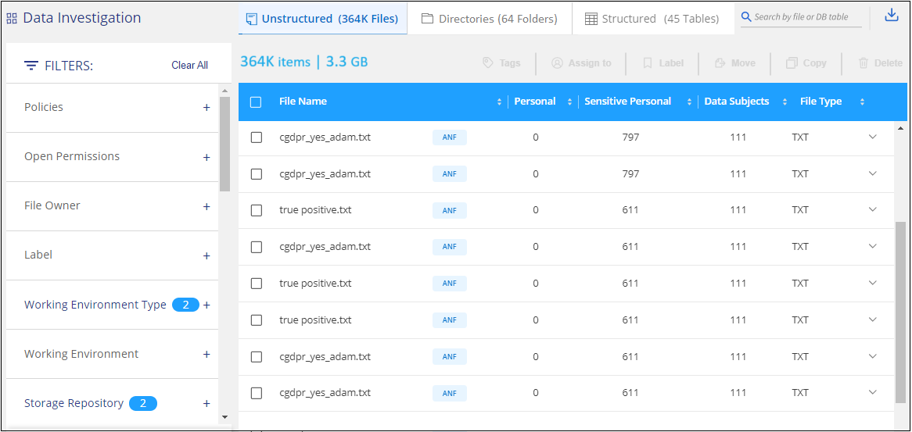
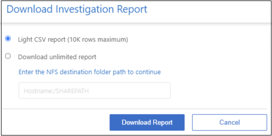

版本資訊
版本資訊
調查組織中儲存的資料
 建議變更
建議變更
您可以在「資料調查」頁面中檢視詳細資料、以調查組織的資料。您可以從 BlueXP 分類 UI 的許多區域瀏覽到此頁面、包括 Governance 和 Compliance 儀表板。

|
本節所述的功能僅在您選擇對資料來源執行完整分類掃描時可用。只有對應掃描的資料來源不會顯示檔案層級的詳細資料。 |
在「資料調查」頁面中篩選資料
您可以篩選調查頁面的內容、只顯示您要查看的結果。這是一項非常強大的功能、因為在您調整資料之後、您可以使用頁面頂端的按鈕列執行各種動作、包括複製檔案、移動檔案、新增標記或AIP標籤至檔案等。
如果您想要在調整頁面內容之後、將其下載為報告、請按一下  按鈕。 如需資料調查報告的詳細資料、請前往此處。
按鈕。 如需資料調查報告的詳細資料、請前往此處。

-
頂層索引標籤可讓您檢視檔案（非結構化資料）、目錄（資料夾和檔案共用）或資料庫（結構化資料）的資料。
-
每一欄頂端的控制項可讓您依數字或字母順序排序結果。
-
左窗格篩選器可讓您選取下一節所述的屬性、以精簡結果。
依敏感度和內容篩選資料
使用下列篩選條件來檢視資料中包含多少敏感資訊。
| 篩選器 | 詳細資料 |
|---|---|
類別 |
選取 "類別類型"。 |
敏感度等級 |
選取敏感度等級：個人、敏感個人或不敏感。 |
識別碼數目 |
選取每個檔案偵測到的敏感識別碼範圍。包括個人資料和敏感的個人資料。在目錄中篩選時、 BlueXP 分類會將每個資料夾（和子資料夾）中所有檔案的相符項目總計。 |
個人資料 |
選取 "個人資料類型"。 |
敏感個人資料 |
選取 "敏感個人資料的類型"。 |
資料主旨 |
輸入資料主旨的完整名稱或已知識別碼。 "在此深入瞭解資料主題"。 |
依使用者擁有者和使用者權限篩選資料
使用下列篩選條件來檢視檔案擁有者及存取資料的權限。
| 篩選器 | 詳細資料 |
|---|---|
開啟權限 |
選取資料內及資料夾/共用內的權限類型。 |
使用者/群組權限 |
選取一或多個使用者名稱和/或群組名稱、或輸入部分名稱。 |
檔案擁有者 |
輸入檔案擁有者名稱。 |
擁有存取權的使用者人數 |
選取一或多個類別範圍、以顯示哪些檔案和資料夾已對特定數量的使用者開啟。 |
依時間篩選資料
請使用下列篩選條件、根據時間準則來檢視資料。
| 篩選器 | 詳細資料 |
|---|---|
建立時間 |
選取建立檔案的時間範圍。您也可以指定自訂時間範圍、以進一步精簡搜尋結果。 |
探索到的時間 |
選擇 BlueXP 分類發現檔案的時間範圍。您也可以指定自訂時間範圍、以進一步精簡搜尋結果。 |
上次修改日期 |
選取上次修改檔案的時間範圍。您也可以指定自訂時間範圍、以進一步精簡搜尋結果。 |
上次存取 |
選取上次存取檔案或目錄（僅限CIFS或NFS）的時間範圍。您也可以指定自訂時間範圍、以進一步精簡搜尋結果。對於 BlueXP 分類掃描的檔案類型、這是 BlueXP 分類掃描檔案的最後一次。 請注意、 BlueXP 分類不會從下列資料來源擷取「上次存取時間」： SharePoint Online 、 SharePoint 內部部署（ SharePoint Server ）、 OneDrive 、 Google Drive 和 Amazon S3 。 |
依中繼資料篩選資料
使用下列篩選條件、根據位置、大小、目錄或檔案類型來檢視資料。
| 篩選器 | 詳細資料 |
|---|---|
檔案路徑 |
輸入最多20個要包含或排除在查詢之外的部分或完整路徑。如果同時輸入包含路徑和排除路徑、 BlueXP 分類會先尋找包含路徑中的所有檔案、然後從排除路徑中移除檔案、然後顯示結果。請注意、使用此篩選器中的「*」並沒有任何效果、而且您無法將特定資料夾排除在掃描之外、系統將掃描設定共用區下的所有目錄和檔案。 |
目錄類型 |
選取目錄類型：「Share（共用）」或「Folder（資料夾）」。 |
檔案類型 |
選取 "檔案類型"。 |
檔案大小 |
選取檔案大小範圍。 |
檔案雜湊 |
輸入檔案的雜湊以尋找特定檔案、即使名稱不同也沒問題。 |
依儲存類型篩選資料
使用下列篩選條件、依儲存類型檢視資料。
| 篩選器 | 詳細資料 |
|---|---|
工作環境類型 |
選取工作環境類型。OneDrive、SharePoint和Google雲端硬碟的分類為「應用程式」。 |
工作環境名稱 |
選擇特定的工作環境。 |
儲存儲存庫 |
選取儲存儲存儲存庫、例如磁碟區或架構。 |
依標記、標籤、指派的使用者和原則篩選資料
使用下列篩選器、依AIP標籤或標記檢視資料。
| 篩選器 | 詳細資料 |
|---|---|
原則 |
選取原則。行動 "請按這裡" 可查看現有策略列表並創建您自己的自定義策略。 |
標籤 |
選取 "AIP標籤" 指派給您的檔案。 |
標記 |
選取 "標記" 指派給您的檔案。 |
指派給 |
選取指派檔案的人員名稱。 |
依分析狀態篩選資料
使用下列篩選條件、依 BlueXP 分類掃描狀態檢視資料。
| 篩選器 | 詳細資料 |
|---|---|
分析狀態 |
選取選項以顯示「擱置第一次掃描」、「已完成掃描」、「擱置重新掃描」或「無法掃描」的檔案清單。 |
掃描分析事件 |
選取您是否要檢視未分類的檔案、因為 BlueXP 分類無法還原上次存取的時間、或是即使 BlueXP 分類無法還原上次存取的時間、仍已分類的檔案。 |
"請參閱「上次存取時間」時間戳記的詳細資料" 如需使用掃描分析事件進行篩選時、出現在「調查」頁面的項目相關資訊。
依重複項目篩選資料
使用下列篩選器檢視儲存設備中重複的檔案。
| 篩選器 | 詳細資料 |
|---|---|
重複項目 |
選取檔案是否在儲存庫中重複。 |
檢視檔案中繼資料
在「資料調查結果」窗格中、您可以按一下  用於檢視檔案中繼資料的任何單一檔案。
用於檢視檔案中繼資料的任何單一檔案。

除了顯示檔案所在的工作環境和磁碟區之外、中繼資料還會顯示更多資訊、包括檔案權限、檔案擁有者、是否有此檔案的重複項目、以及指派的AIP標籤（如果有） "BlueXP 分類中的整合式 AIP"）。如果您打算使用、這項資訊很實用 "建立原則" 因為您可以看到用來篩選資料的所有資訊。
請注意、並非所有資料來源都能取得所有資訊、只是適合該資料來源的資訊而已。例如、Volume名稱、權限和AIP標籤與資料庫檔案無關。
檢視單一檔案的詳細資料時、您可以對該檔案採取幾項行動：
-
您可以將檔案移動或複製到任何NFS共用區。請參閱 "將來源檔案移至NFS共用區" 和 "將來源檔案複製到NFS共用區" 以取得詳細資料。
-
您可以刪除檔案。請參閱 "正在刪除來源檔案" 以取得詳細資料。
-
您可以將特定狀態指派給檔案。請參閱 "套用標記" 以取得詳細資料。
-
您可以將檔案指派給BlueXP使用者、負責對檔案執行任何後續行動。請參閱 "指派使用者至檔案" 以取得詳細資料。
-
如果您已將 AIP 標籤與 BlueXP 分類整合、您可以將標籤指派給此檔案、或變更為其他標籤（如果已經存在）。請參閱 "手動指派AIP標籤" 以取得詳細資料。
檢視檔案和目錄的權限
若要檢視可存取檔案或目錄的所有使用者或群組清單、以及擁有的權限類型、請按一下*檢視所有權限*。此按鈕僅適用於CIFS共用、SharePoint Online、SharePoint內部部署及OneDrive中的資料。
請注意、如果您看到 SID （安全性識別碼）而非使用者和群組名稱、則應該將 Active Directory 整合到 BlueXP 分類中。 "瞭解如何做到這一點"。

您可以按一下  可讓任何群組查看屬於群組的使用者清單。
可讓任何群組查看屬於群組的使用者清單。
此外、 您可以按一下使用者或群組的名稱、「調查」頁面會顯示該使用者或群組的名稱、並填入「使用者/群組權限」篩選器中、以便查看使用者或群組可存取的所有檔案和目錄。
檢查儲存系統中是否有重複的檔案
您可以檢視儲存系統中是否儲存了重複的檔案。如果您想要找出可節省儲存空間的區域、此功能非常實用。此外、確保儲存系統中不會不必要地複製具有特定權限或敏感資訊的特定檔案、也很有幫助。
會比較所有大小為 1 MB 或更大且包含個人或敏感個人資訊的檔案（不包括資料庫）、以查看是否有重複的檔案。您可以使用「調查」頁面篩選「檔案大小」和「重複」、來查看環境中要複製哪些特定大小範圍的檔案。
BlueXP 分類使用雜湊技術來判斷重複的檔案。如果任何檔案的雜湊代碼與其他檔案相同、我們可以100%確定檔案確實重複、即使檔案名稱不同。
您可以下載重複檔案清單、並將其傳送給儲存設備管理員、讓他們決定可以刪除哪些檔案（如果有）。您也可以 "刪除檔案" 如果您確信不需要特定版本的檔案、請自行設定。
檢視所有重複的檔案
如果您想要在工作環境中複製的所有檔案清單、以及要掃描的資料來源、您可以在「資料調查」頁面中使用名為「重複項目>有重複項目」的篩選條件。
所有重複的檔案都會顯示在「結果」頁面中。
檢視是否有重複的特定檔案
如果您想要查看單一檔案是否有重複項目、請在「資料調查結果」窗格中按一下  用於檢視檔案中繼資料的任何單一檔案。如果某個檔案有重複項目、此資訊會顯示在「重複項目」欄位旁。
用於檢視檔案中繼資料的任何單一檔案。如果某個檔案有重複項目、此資訊會顯示在「重複項目」欄位旁。
若要檢視重複檔案的清單及其所在位置、請按一下*檢視詳細資料*。在下一頁中、按一下「檢視重複記錄」以檢視「調查」頁面中的檔案。


|
您可以使用本頁提供的「檔案雜湊」值、並直接在「調查」頁面中輸入、以隨時搜尋特定的重複檔案、也可以在「原則」中使用。 |
資料調查報告
「資料調查報告」是「資料調查」頁面篩選內容的下載檔案。
報告有兩種不同格式：
-
做為 .CSV 檔案、您可以儲存至本機機器。
此報告最多可包含 10 、 000 列資料。
-
以 .JSON 檔案的形式匯出至 NFS 共用。
如果有超過 250,000 列資料、則會建立其他 .JSON 檔案。
匯出至檔案共用時、請確定 BlueXP 分類具有正確的匯出存取權限。
如果 BlueXP 分類正在掃描檔案（非結構化資料）、目錄（資料夾和檔案共用）和資料庫（結構化資料）、則最多可下載三個報告檔案。
產生資料調查報告
-
在「Data Investigation（資料調查）」頁面中、按一下
按鈕。 -
選取您要下載資料的.CSV報告或.Json報告、然後按一下*下載報告*。
選取.Json報告時、請以「<host_name>//<share_path>'的格式輸入要下載報告的NFS共用名稱。

對話方塊會顯示正在下載報告的訊息。
您可以在中檢視Json報告產生的進度 "「行動狀態」窗格"。
每份資料調查報告中包含的內容
*非結構化檔案資料報告*包含下列檔案相關資訊：
-
檔案名稱
-
位置類型
-
工作環境名稱
-
儲存儲存庫（例如、磁碟區、儲存區、共享區）
-
儲存庫類型
-
檔案路徑
-
檔案類型
-
檔案大小（ MB ）
-
建立時間
-
上次修改時間
-
上次存取
-
檔案擁有者
-
類別
-
個人資訊
-
敏感的個人資訊
-
開放式權限
-
掃描分析錯誤
-
刪除偵測日期
刪除偵測日期可識別檔案刪除或移動的日期。這可讓您識別敏感檔案的移動時間。刪除的檔案不屬於儀表板或「調查」頁面上顯示的檔案編號數。這些檔案只會出現在 CSV 報告中。
*非結構化目錄資料報告*包含下列資料夾與檔案共用的相關資訊：
-
工作環境類型
-
工作環境名稱
-
目錄名稱
-
儲存儲存庫（例如資料夾或檔案共用）
-
目錄擁有者
-
建立時間
-
探索到的時間
-
上次修改時間
-
上次存取
-
開放式權限
-
目錄類型
*結構化資料報告*包含下列資料庫表格的相關資訊：
-
DB表格名稱
-
位置類型
-
工作環境名稱
-
儲存儲存庫（例如架構）
-
欄數
-
列數
-
個人資訊
-
敏感的個人資訊